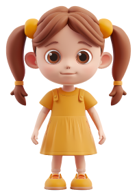
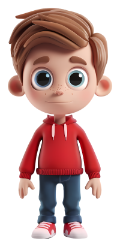

Izaberite pol djeteta: djevojčica dječak
Izaberite uzrast deteta: Uzrasti pismo za bebu pismo za dijete vrtićkog uzrasta pismo za dijete nižeg školskog uzrasta pismo za stariju djecu i odrasle
Izaberite pismo: latinica ćirilica